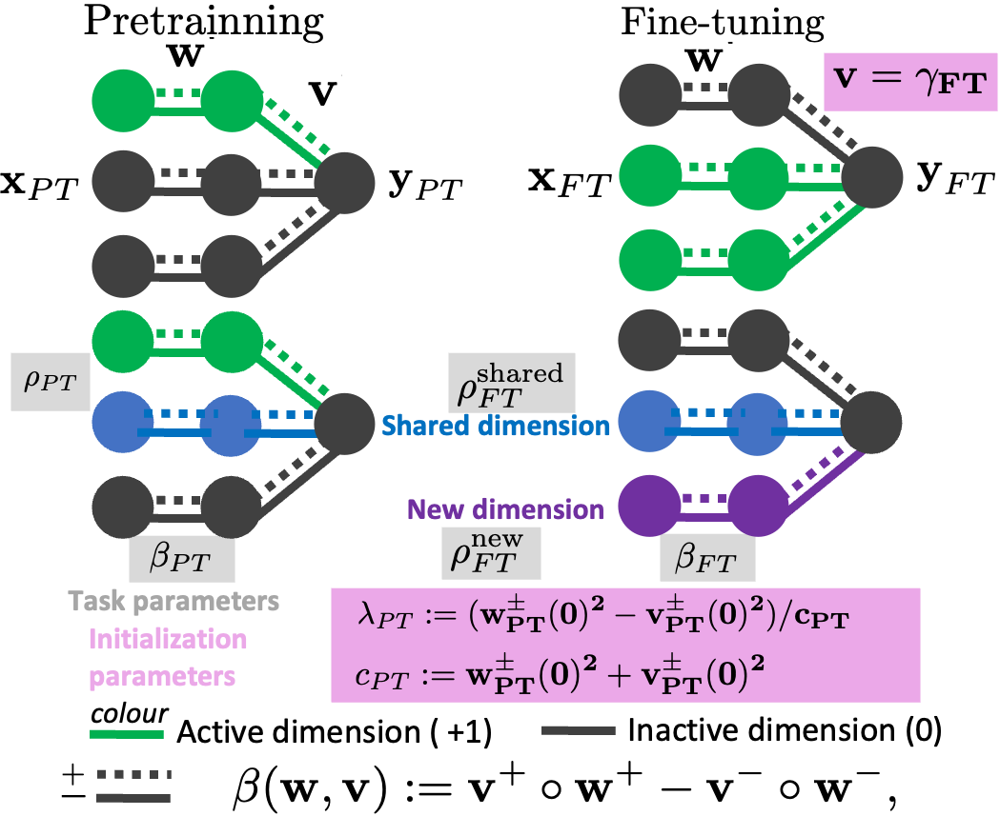
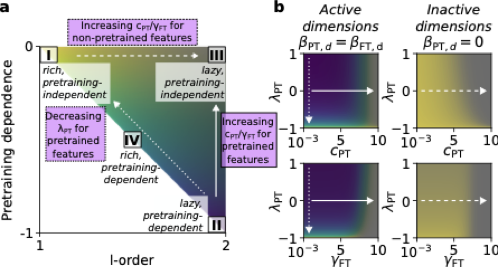
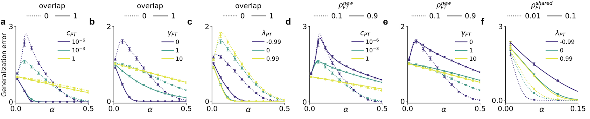
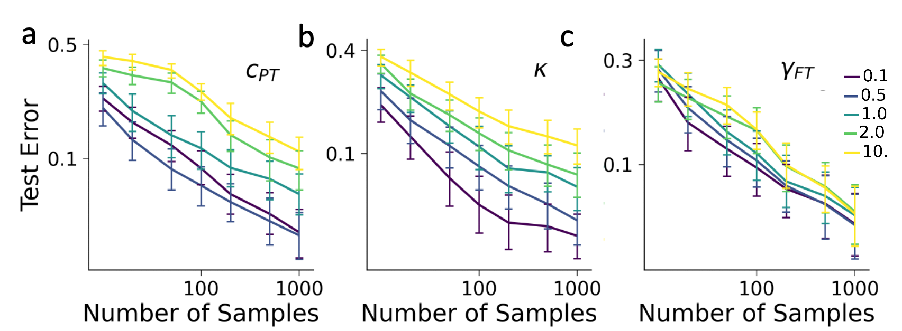

A Theory of How Pretraining Shapes Inductive Bias in Fine-Tuning
An end-to-end theory of the pretraining–fine-tuning pipeline in diagonal linear networks, where the relative scale of initialization across layers controls when features are reused versus refined
Pretraining and fine-tuning are central to modern machine learning, yet how a network’s initialization shapes its ability to reuse and refine features during fine-tuning has been poorly understood. This work develops an analytical theory of the pretraining–fine-tuning pipeline in diagonal linear networks, deriving exact expressions for the generalization error as a function of initialization parameters and task statistics. Different initialization choices place the network into four distinct fine-tuning regimes, distinguished by their ability to support feature learning and reuse. A smaller initialization scale in earlier layers — a negative relative scale across layers — lets the network both reuse and refine its features, improving generalization on fine-tuning tasks that rely on a subset of pretraining features. The same initialization parameters are shown empirically to govern generalization in nonlinear ResNets trained on CIFAR-100.
Samuel Lippl and Clémentine Dominé are co-senior authors; Nicolás Anguita is the corresponding author.1
1 Author roles as stated in the paper. Affiliations are copied verbatim from the manuscript.
The question
Deep networks are usually trained in two stages: pretraining on a large general-purpose dataset, then fine-tuning on a smaller target task. For this pretraining + fine-tuning (PT+FT) pipeline to pay off, the network has to learn useful features during pretraining and then reuse them during fine-tuning — while still being free to refine old features and learn genuinely new ones (Lampinen and Ganguli 2018; Saxe et al. 2019). What controls the balance between these behaviors has remained unclear.
Prior work established that weight initialization — its absolute scale and its relative scale across layers — moves single-task training between a fixed-feature “lazy” regime that behaves like a kernel machine (Jacot et al. 2018; Chizat et al. 2019) and a feature-learning “rich” regime (Woodworth et al. 2020; Dominé et al. 2024; Kunin et al. 2024). This paper asks how that picture extends to the two-stage PT+FT setting, and answers it analytically.
A tractable model: diagonal linear networks
The analysis uses diagonal linear networks, a one-hidden-layer model that parametrizes a linear map f:\mathbb{R}^D\to\mathbb{R} as f_{\mathbf{w},\mathbf{v}}(\mathbf{x})=\beta(\mathbf{w},\mathbf{v})^\top\mathbf{x}, with effective weights
\beta(\mathbf{w},\mathbf{v}) \;=\; \mathbf{v}^{+}\!\circ\mathbf{w}^{+}-\mathbf{v}^{-}\!\circ\mathbf{w}^{-}.
Splitting each coordinate into a positive and a negative pathway lets the network start at \beta = 0 without sitting on a saddle. Despite their simplicity, these networks reproduce the two phenomena that matter: their initialization controls the rich/lazy transition, and their generalization differs between the two regimes (Woodworth et al. 2020; Azulay et al. 2021).
Training proceeds by gradient flow to zero training error, first on a pretraining task and then on a fine-tuning task. Three initialization parameters are tracked:
The teacher data uses a spike-and-slab model: a Bernoulli mask picks the active coordinates for each task, with sparsity \rho_{PT} for pretraining and a split of \rho_{FT}^{\text{shared}} / \rho_{FT}^{\text{new}} controlling how much the fine-tuning support overlaps with — or departs from — the pretraining support.
- the absolute scale c_{PT} — the overall magnitude of the pretraining weights;
- the relative scale \lambda_{PT}\in[-1,1] — the difference in magnitude between the first and second layers (\lambda_{PT}>0 means w>v; \lambda_{PT}<0 means v>w);
- the fine-tuning readout scale \gamma_{FT}\ge 0 — the readout weights are re-initialized before fine-tuning so the effective function restarts at \beta_{FT}(0)=0.

The implicit bias of fine-tuning
The central theoretical result derives the implicit bias of PT+FT in closed form. At convergence, fine-tuning selects the interpolating solution that minimizes a separable penalty Q_k(\beta_{FT})=\sum_d q_{k_d}(\beta_{FT,d}), where the per-coordinate “stiffness” k_d depends on c_{PT}, \lambda_{PT}, \gamma_{FT} and on the pretrained weights \hat{\beta}_{PT,d} themselves. Two consequences stand out. First, because k_d depends on \hat{\beta}_{PT}, the fine-tuned solution can inherit structure from the pretraining task. Second — and perhaps surprisingly — although the relative scale \lambda_{PT} does not affect the inductive bias of pretraining in these networks, it does reshape the learned hidden representation and therefore the inductive bias of fine-tuning.
Two scalar diagnostics summarize the regime, both introduced by Lippl and Lindsey (2024):
- the \ell-order, \tfrac{\partial\log q_{k_d}}{\partial\log|\beta_{FT,d}|}, measures the sparsity bias: \ell-order =1 is a sparse (\ell_1-like) bias, \ell-order =2 a non-sparse (\ell_2-like) bias;
- the pretraining dependence (PD), \tfrac{\partial\log q_{k_d}}{\partial\log|\beta_{PT,d}|}, measures how strongly the penalty leans on pretrained features: PD =-1 means the penalty is inversely proportional to |\beta_{PT,d}| (strong reuse), PD =0 means no dependence.
The two cannot be maximized at once. Across the full range of initializations the paper proves a universal trade-off:
\ell\text{-order}\in[1,2],\qquad \mathrm{PD}\in[-1,0],\qquad \ell\text{-order}+\mathrm{PD}\in[1,2].
This generalizes a result of Lippl and Lindsey (2024), who found \ell\text{-order}+\mathrm{PD}=1 only in the special limit c_{PT}\to 0,\ \lambda_{PT}=\gamma_{FT}=0.
Four learning regimes
The trade-off carves the (\ell\text{-order},\ \mathrm{PD}) plane into a triangle whose corners are three limiting regimes, with a fourth living in the interior (Figure 2):
| Regime | \ell-order · PD | Penalty | Reached by |
|---|---|---|---|
| I — rich, pretraining-independent | 1 · 0 | \lVert\beta_{FT}\rVert_1 | e.g. \lambda_{PT}\to-1,\ \gamma_{FT}\to0 |
| II — lazy, pretraining-dependent | 2 · -1 | weighted \ell_2 | e.g. c_{PT}\to0,\ \lambda_{PT}\to1 |
| III — lazy, pretraining-independent | 2 · 0 | \lVert\beta_{FT}\rVert_2 | e.g. c_{PT}\to\infty or \gamma_{FT}\to\infty |
| IV — rich, pretraining-dependent | <2 · <0 | intermediate | negative relative scale \lambda_{PT} |
Regime III — lazy and pretraining-independent — is new to the fine-tuning setting: with badly chosen initialization, pretraining produces no transferable features at all. The genuinely useful regime is IV, the rich, pretraining-dependent regime, which sits in the interior of the triangle and leverages sparsity and feature reuse simultaneously. Reaching it depends on the relative scale \lambda_{PT}: a negative relative scale shrinks the first-layer representation, so that after rescaling the readout to \gamma_{FT}=0 the network is pushed toward the rich regime while still retaining a dependence on the pretrained features.

When does each regime generalize best?
Plugging the implicit bias into a replica-theory analysis (following Bereyhi and Müller (2018)) yields an exact expression for the generalization error \mathcal{E}=\lVert\beta_{FT}^*-\hat\beta_{FT}\rVert_2^2 in the high-dimensional limit, as a function of initialization, task statistics, and the data scale \alpha_{FT}=N_{FT}/D. The predicted error curves match direct simulations of diagonal linear networks and trace three questions along the three axes of the inductive bias (Figure 3):
- Benefit from shared dimensions. As c_{PT} and \gamma_{FT} shrink, performance becomes increasingly sensitive to overlap between the pretraining and fine-tuning supports — the network moves toward the pretraining-dependent regimes. Decreasing \lambda_{PT} instead reduces the benefit of overlap.
- Benefit from sparsity in new dimensions. For coordinates inactive during pretraining, shrinking c_{PT} and \gamma_{FT} makes sparsity in the fine-tuning task increasingly helpful — a transition from the lazy, pretraining-independent regime (III) to the rich one (I).
- Benefit from sparsity in shared dimensions. Decreasing \lambda_{PT} lets the network exploit sparsity even among shared, pretrained dimensions — entering regime IV — though this benefit vanishes once c_{PT} or \gamma_{FT} grows large.

The relative scale \lambda_{PT} emerges as the key lever: making it more negative walks the network along the trade-off diagonal, trading pretraining dependence for a stronger sparsity bias. Whether that helps depends on the task — full overlap favors a less negative \lambda_{PT}, while sparse, partially-shared targets favor a more negative one.
From linear theory to ResNets on CIFAR-100
To test whether the linear theory says anything about real networks, the same three levers are translated to a ResNet-18 pretrained on 98 CIFAR-100 classes and fine-tuned on the remaining 2 (the class split sampled randomly and repeated 50 times). The relative scale \lambda_{PT} is emulated by a factor \kappa scaling the embedding layer and the first three residual stages; c_{PT} by scaling all weights; \gamma_{FT} by rescaling the final classification layer after pretraining (Figure 4):
- a small \kappa<1 (a negative relative scaling) improves fine-tuning generalization;
- increasing c_{PT} degrades it;
- decreasing \gamma_{FT} improves it at intermediate sample sizes.
All three trends agree with the theory, and a representation-level analysis finds that each setting induces a signature of the pretraining-dependent rich regime (IV).

Why it matters
The paper provides an end-to-end, analytically exact account of how initialization and data jointly shape fine-tuning generalization in a tractable model — and identifies actionable levers for controlling the interplay between reusing, refining, and learning features. The headline practical message is that the relative scale of initialization across layers, not just its overall magnitude, is what enables continued feature learning during fine-tuning. Extending the framework to nonlinear networks, and measuring \ell-order and pretraining dependence in larger architectures, are flagged as the natural next steps.
Citation
@inproceedings{anguita2026,
author = {Anguita, Nicolás and Locatello, Francesco and M. Saxe,
Andrew and Mondelli, Marco and Mancini, Flavia and Lippl, Samuel and
Dominé, Clémentine},
title = {A {Theory} of {How} {Pretraining} {Shapes} {Inductive} {Bias}
in {Fine-Tuning}},
booktitle = {Proceedings of the 43rd International Conference on
Machine Learning (ICML)},
date = {2026-02-23},
url = {https://arxiv.org/abs/2602.20062}
}